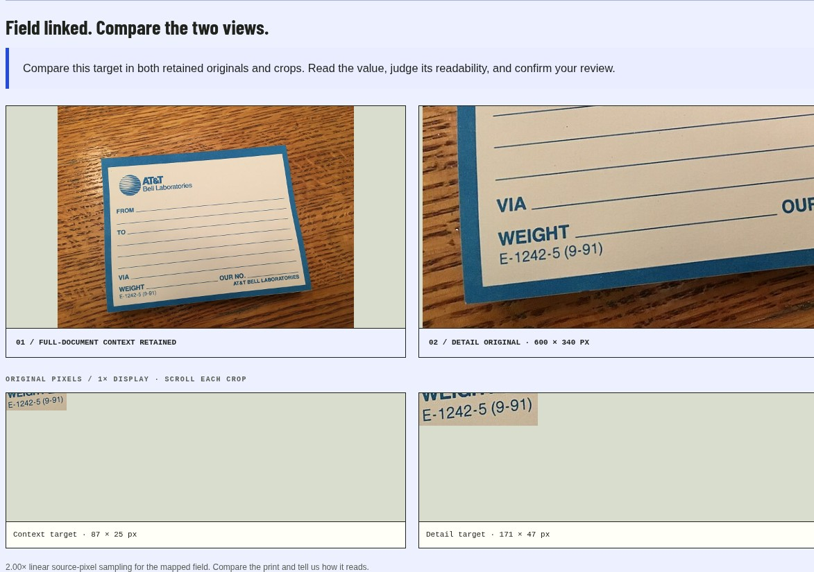

CAPTURE LOOP / LIVE FIELD TRIAL
A LABEL.
A CLEAR
NEXT STEP.
Keep the whole label. Bring the small field closer.
Match linked photos, compare the print, and confirm the value.
Watch the 101-second walkthrough ↗ · Read the technical report ↗ · New: linked field-photo study ↗
Free, limited-capacity trial through October 14, 2026, 12:00 UTC · Your own session · 6 capture attempts

The full-label context stays in place. OpenCV maps the selected code into a higher-sampling crop, then the reviewer compares the originals.
Photo: Jonathan Schilling / Wikimedia Commons · CC BY-SA 4.0 · Controlled scaling and cropping of one photograph- 01 / VISION
Measure the original.
OpenCV 5 on AWS Lambda measures the full label. The station maps a closer detail back to the saved target field.
- 02 / AGENT
Choose the next action.
The model calls the image tool, reads geometry and target sampling, and executes a further-photo request or a field-review task.
- 03 / REVIEW
Keep the evidence.
Compare the full label and its linked detail. Record the value and readability yourself. Export both source regions, capture history and tool calls.
OPEN IT ON YOUR PHONE
One label.
Two useful views.
Choose Start the two-view sample. The station saves the full label and selects its code. Check the same-document declaration, then choose Load the paired sample detail. Compare the print and confirm the value you read.
The sample uses two controlled views of one source photograph. The GLS and cropped-label photos remain available as independent capture examples.
For your own document, begin with all four edges against a contrasting background. Select a field, then add a closer photo with shared surrounding print. Choose photos cleared for this trial.
Your trial workspace
A session cookie keeps your photos and review in your own workspace. The live server deletes its session files after 24 hours; you can delete them earlier from the station.
Full-label photos go to the private AWS image tool; field crops and detail registration run on the station server. The model receives numerical observations, the selected field name and the preceding request. The station explains the data path before upload.
Inspect the recorded two-view run ↗
Recorded examples use selected licensed photos and scripted field reviews. The field trial gathers fresh phone, lighting and usability feedback.
HELP SHAPE THE CAPTURE STATION